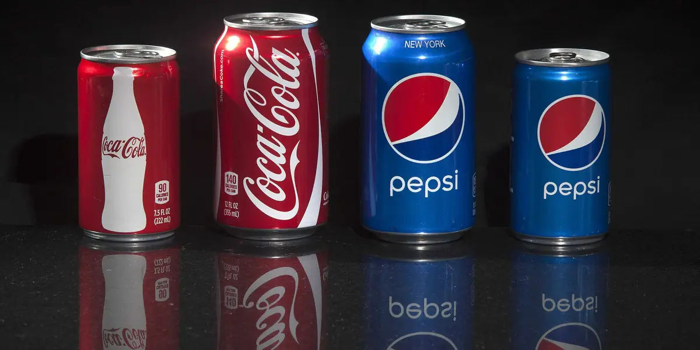

Modern Day Sodas
Soft drinks have come a long way since their early days as medicinal tonics. Today, the soda industry is a massive global market, with numerous brands and flavors catering to a wide range of tastes and preferences.
In recent years, there has been a significant shift towards healthier options. Many consumers are now seeking out low-calorie, low-sugar, and natural ingredient alternatives. This has led to the rise of diet sodas, sparkling water, and beverages made with natural sweeteners like stevia.
Brands like Coca-Cola and Pepsi continue to dominate the market, but there are also many new players making a name for themselves with innovative flavors and marketing strategies. Craft sodas, which focus on unique ingredients and artisanal production methods, have also gained popularity.
Additionally, sustainability has become a key concern in the industry. Companies are investing in eco-friendly packaging and production methods to reduce their environmental impact. This includes the use of recyclable materials and efforts to reduce plastic waste.
Overall, the modern soda landscape is diverse and dynamic, constantly evolving to meet the changing demands and preferences of consumers.
